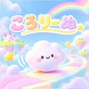

ころりーぬアプリの不具合の報告・ご要望・そのほかのご質問は、下記のメールアドレスまでご連絡ください。内容を確認し、順次対応いたします。
iPhoneを傾けてボールを転がし、ゴールまで運びます。コースを選んで「あそぶ」を押し、遊びやすい角度でiPhoneを持って「この角度でスタート」を押すと、その角度が「水平」になります。
傾きの効き方は、アプリの「設定」→「傾きの感度」や、遊んでいる途中の一時停止の画面で変えられます。
コインは、コースをはじめてクリアしたとき（コースの★の数×10コイン）、ボールガチャの画面で広告を見たとき（1回10コイン・1時間に5回まで）、週間ランキングで5位までに入ったとき（次の週に、Game Centerにサインインした状態でアプリを開くともらえます）に手に入ります。コインは、ボールガチャ（1回500コイン）で使えます。ガチャからは、まだ持っていないボールが出ます。
「全コース解放パック」を買うと、有料のコースがすべて遊べるようになり、ゴールの画面の広告がなくなります（買い切りです）。機種変更やアプリの入れ直しのあとは、アプリの「設定」→「購入を復元する」で、もう一度お支払いをすることなく元に戻せます。購入したときと同じApple IDでサインインしていることを確認してください。
ランキングとオンライン対戦は、Apple社の「Game Center」を使っています。iPhoneの「設定」→「Game Center」でサインインしていることを確認してください。サインインしていない間にゴールしたタイムは、ランキングに送られません。オンラインの相手が見つからないときは、「コンピュータとたいせん」でも遊べます。
iPhoneでiCloudにサインインしていれば、自己ベスト・クリアしたコース・コイン・ボール・設定は、iCloudに自動でバックアップされています。機種変更やアプリの入れ直しのあと、はじめてアプリを開いたときに「前のデータが見つかりました」と表示されるので、「戻す」を選ぶと元に戻せます。表示されないときは、前のiPhoneと同じApple IDでiCloudにサインインしているかを確認してください。iCloudから読みこむまで、少し時間がかかることがあります。
ゴースト（自己ベストのときのボールの動き）はバックアップされないため、戻すことはできません。全コース解放パックは、「設定」→「購入を復元する」で戻せます。iCloudにサインインしていない間の記録は端末の中にだけ保存され、アプリを削除すると消えてしまいます。Game Centerのランキングに送られたタイムは、Game Centerに残ります。
アプリの「設定」で、BGM・効果音・ぶつかった時の振動を、それぞれオン・オフできます。
アプリの「設定」→「言語 / Language」で、日本語と英語を切りかえられます。
本アプリは、無料でご利用いただくために、ゴールの画面などで広告を表示しています。広告の取り扱いについては、プライバシーポリシーの「広告について」をご覧ください。
For bug reports, requests, or any other questions about the app, please email us at the address below. We will review your message and respond in turn.
Tilt your iPhone to roll the ball to the goal. Pick a course and tap "Play", hold your iPhone at a comfortable angle, and tap "Start at this angle". That angle becomes "level".
You can change how strongly the tilt works in the app under Settings → Tilt sensitivity, or on the pause screen during a game.
You get coins when you clear a course for the first time (10 coins × the course's stars), when you watch an ad on the Ball Gacha screen (10 coins each, up to 5 times an hour), and when you place in the top 5 of a weekly ranking (paid out when you open the app the next week while signed in to Game Center). Spend coins on the Ball Gacha (500 coins a spin). The gacha always gives you a ball you don't have yet.
The All Courses Pack unlocks every paid course and removes ads from the goal screen. It is a one-time purchase. After changing phones or reinstalling the app, tap Settings → Restore purchases to get it back without paying again. Make sure you are signed in with the same Apple ID you bought it with.
Leaderboards and online races use Apple's Game Center. Make sure you are signed in under Game Center in the iPhone Settings app. Times from runs while you were signed out are not sent to the leaderboard. If no online opponent is found, you can also race the computer.
If you are signed in to iCloud on your iPhone, your personal bests, cleared courses, coins, balls, and settings are backed up to iCloud automatically. After changing phones or reinstalling the app, the first time you open it you will see "Found your saved data". Choose "Restore" to get your progress back. If you do not see it, make sure you are signed in to iCloud with the same Apple ID as before. Loading from iCloud can take a little while.
Ghosts (how your ball moved on your best run) are not backed up and cannot be restored. You can get the All Courses Pack back with Settings → Restore purchases. Progress made while you are not signed in to iCloud is stored only on your device and is removed if you delete the app. Times sent to the Game Center leaderboard stay in Game Center.
In the app's Settings, you can turn BGM, sounds, and vibration on bumps on or off separately.
In the app, go to Settings → 言語 / Language to switch between Japanese and English.
To keep the app free, it shows ads, such as on the goal screen. For how ads handle information, please see "Advertising" in the Privacy Policy.